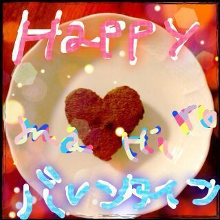

ほっほーーい (((/・∀・)/☆
みなちゃま、
どーも オハヨウゴザイマス ! !
ろってぃーです ♪
そして隣にまいやんちゃん //
今日は珍しい時間に
blog更新してるでしょっ(*^-^*)?
昨日の晩 は更新できやんかったぁ、
許してにゃん 。‥(((/・-・)/
題名の続きだけど
まひろら アンダーチームの新曲も
とってもいいんだ♪)))
テンポがよくって
たっのしい感じ (・▽・)/
楽しみにしていてください(*・ω・*)
昨日から 2/22にあるライヴの
リハーサルが始まりました ! !
全力で楽しみたいと思ってる !
そのために、これから毎日
リハーサル頑張ります //
土日は 握手会だね^^
そしてそして
今日のAM12時を過ぎてすぐ
地元のお友達から
こんな写真が送られてきました(*^^*)
焼き立てだって (〃ω〃)

『直接は渡せないから』
って...
いやん(*ノ▽ノ)
本当嬉しかった。
友達サンキュー ♪
今日は
バレンタインデーだもんねっ)))
楽しみだっ ヾ(*^▽^*)ノ
今日のことはまた更新するねん♪
ではではん )))
今日も１日ぃ〜
頑張ぁ〜〜？
ろってぃーーー! ! !
のし(・ω・)ノシ★☆★